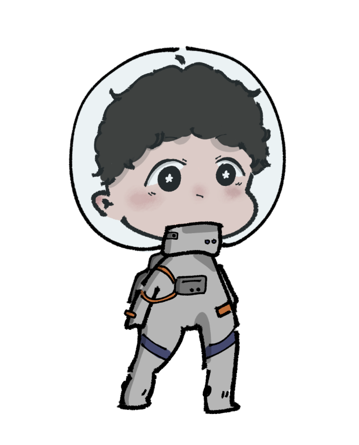

oioi aniversariante-nauta (nao sou boa em mesclar palavras). ta aproveitando seu aniver? espero que sim. tomara que hoje voce coma muito bolo e sorria bastante.
isso aqui e de mim (cabecuda) pra voce (bem mais cabecao). espero que goste.

tudo comecou em uma manha da pandemia, honestamente na epoca eu achava que so ia ficar 15 dias sem aula mesmo, entao aproveitei pra ir jogar gartic de manha cedo.
eu entrei em uma sala aleatoria, nem sabia o tema direito, mas ja fui conversar no chat e percebi que duas pessoas dali (voce e o ju) ja se conheciam. perguntei so voces tinham discord e entrei no link, sem nem imaginar que a gente ia criar um laco de amizade tao forte.
depois disso, a gente conversou bastante no discord e fomos jogando tipos diferentes de jogos. a gente comecou a jogar minecraft com o hyarle e foi uma bagunca.
o hyarle so queria saber de construir e o ju de fazer um portal pro nether. eu mal sabia seguir coordenada e voce usava uma skin que voce segurava a propria cabeca, demorei anos pra entender aquela skin.
hoje em dia o omlet nem existe mais. /ᐠ - ˕ -マ Ⳋ
a gente tambem jogou roblox por um tempo. piggy principalmente.
lembro de voce, ju e ester fazendo todos os puzzles enquanto eu principalmente me escondia, mas ainda era divertido.
felizmente, o piggy e o roblox ainda existem.
um ano depois, em 2021, foi que a gente comecou a se falar bem mais.
nesse ano, a gente ainda tava em pandemia e eu lembro que a gente se falava todo domingo principalmente, mas alguns outros dias da semana tambem.
eu fiquei muito feliz principalmente por te conhecer melhor e a gente ficou bem mais amigo nessa epoca tambem.
depois disso, a gente ja jogou muita coisa junto e conversou sobre todo tipo de coisa.
ja se passaram 4 anos desde que a gente se conheceu, voce se tornou uma das pessoas mais importantes pra mim e agora voce ja ta fazendo 18 (っ- ‸ - ς) nem acredito como o tempo correu tao rapido.
desse jeito, como eu desejei todo esse tempo e sempre vou desejar, espero que voce seja cada vez mais e mais feliz a cada ano. Sei que voce sempre vai ser o melhor.
!!!FELIZ ANIVERSARIO!!!
